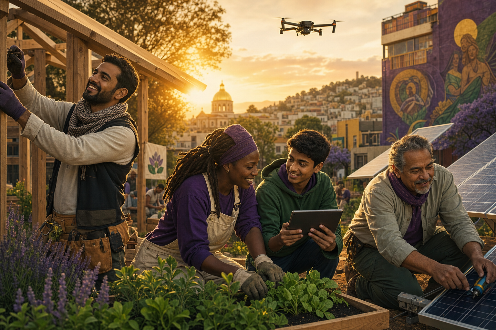

A degree at NOVO isn't proven on paper — it's proven in the good it does. These are the kinds of Living Works our learners build as they earn their Opus.
Illustrative Living Works across our fields of study — each real, each reviewed, each leaving a measurable mark.
A learner designed and installed community solar for a block without reliable power, training residents to maintain it.
An open translation tool built with and for a refugee community, preserving dialects at risk of being lost.
A peer mental-health circle and training curriculum, now run entirely by the community that co-created it.
A plain-language platform making a town's budget legible to every resident, sparking record civic turnout.
An intergenerational public artwork and oral-history archive documenting a neighborhood's story in its own words.
A regenerative community farm and seed library feeding a food desert while restoring depleted soil.
Illustrative of the Living Works NOVO learners undertake. Your Opus starts with one.
Every Opus begins with a single Living Work. Begin yours.
Begin Now →